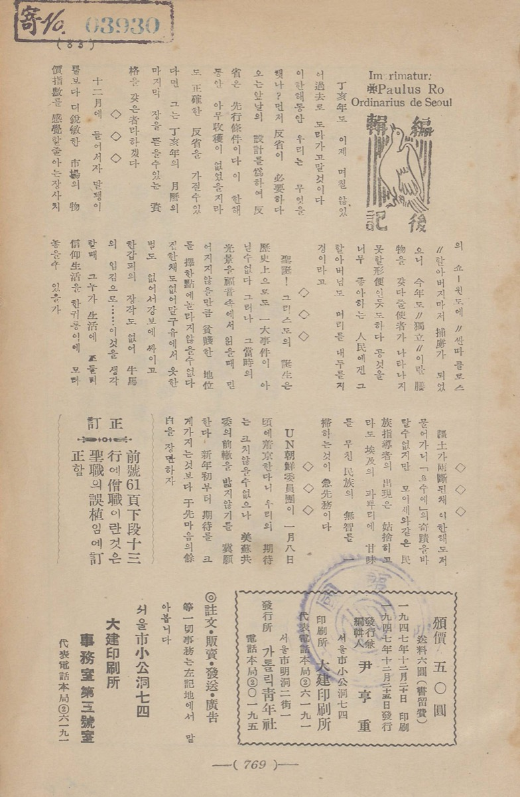

Executive Summary
The National Library of Korea opened the AI training data it built from the national collection to the public for the first time on September 17. The venue is a site called Gongyuseojae, the Shared Library, and it can be searched and downloaded from without registering an account. Modern magazines from the 1930s and 1940s, government publications and school textbooks from the 1940s through the 1960s, material the library published itself, and open access scholarly articles licensed for AI training all went in. This article looks at what the figure attached to that announcement, 38.33 million items, actually counted.
The total written on the Shared Library's front page is 38,332,587. Of that, 38,307,128 sits under the label "character dataset," and 99.9 percent of the whole comes from there. Material counted in works of text amounts to 3,974. The three figures count in different units, and the announced number is those three added together as they stand. The search page on the same platform puts the same holdings at 25,459.
Sections 1 and 2 follow what the library stated and what the Shared Library's own screens record. The reading from section 3 onward is one this article sets up.
Key Numbers
Sources: National Library of Korea, Shared Library data status panel (checked 2026-09-26) · Ajunews (2026-09-17).
3,974 works
Material released as text
The share of the announced figure counted in books or articles. More than half of it, 2,114, is open access scholarly articles, while textbooks and government publications come to 49 between them
38.3 million
Items in the character dataset
38,307,128 precisely, and 99.9 percent of the announced total comes from here. The user guide files this under image data
21,485 items
Tables, illustrations, photos, ads
7,030 tables, 7,444 illustrations, 4,680 photographs and 2,331 advertisements added together. Pictures lifted off the page
About 300 works
Due to follow at year's end
Ttakjibon, the cheap Korean popular novels printed in the early twentieth century, with the volume announced at roughly 30,000 pages
What Went Onto the Shared Library
The announcement the National Library of Korea made on September 17 says a short thing. The AI training data it built while digitizing its holdings goes out to the public for the first time. This is the first time a national library here has packaged its own collection into a form an AI can learn from and opened it. The venue, the Shared Library, began as a site for a citizen participation project, and its screens were rebuilt this time around AI training data.
Four strands of material went in. Modern magazines from the 1930s and 1940s, government publications and school textbooks from the 1940s through the 1960s, material the National Library of Korea published itself, and open access scholarly articles whose rights holders permitted use in AI training. Break the text down by resource type on the Shared Library's own screens and two more categories appear alongside those, monographs and serials. The modern magazines, the serials and the open access articles are split by article rather than by volume.
How many items sit in each strand is something the resource type filter on the search page states outright. The order in which the announcement introduced the material and the order of actual volume are not the same.
| Resource type | Text | Images |
|---|---|---|
| Open access scholarly articles (by article) | 2,114 | 0 |
| Modern magazines (by article) | 998 | 1,186 |
| Serials (by article) | 565 | 291 |
| Monographs | 200 | 10,377 |
| National Library of Korea publications | 48 | 6,794 |
| School textbooks | 29 | 1,284 |
| Government publications | 20 | 1,553 |
| Total | 3,974 | 21,485 |
Source: Shared Library integrated search, counts per resource type filter (checked 2026-09-26). Each column adds up to the total printed on the screen.
More than half the text, 2,114 items, is open access scholarly articles. The textbooks and government publications the announcement put up front stand at 29 and 20, which is 49 for the two together. On the image side the order changes again. The 10,377 items drawn from monographs and the 6,794 from the library's own publications account for most of it. Count the same release by text or by image and the material at the head of the list is swapped wholesale.
The formats are published too. Text comes as PDFs with the characters hidden underneath, plus XML, TXT and JSON. A PDF that lays the recognized characters over the scanned image suits a human reader, while XML and JSON suit a machine that will ingest them directly. On the image side, tables, illustrations, photographs and advertisements are cut out by type and each carries contextual information. The library states that it went through a cycle of reviewing the recognized text, correcting errors and feeding the corrections back into the model.
The threshold for downloading is low. No account registration stands in the way, and an individual item can be taken straight from its detail screen once a format is picked. The full dataset download does ask whether you are an institution or an individual and what you intend to use it for. Options such as AI training, service development, academic research, content production and education are laid out, and once a choice is made the material arrives as a single compressed file.
This release did not arrive out of nowhere. In February 2026 the library stated that it would build AI training data centered on material whose copyright had expired or been cleared, hand that data to the Ministry of Science and ICT for its sovereign AI foundation model project, and open the Shared Library so the same data reached the public as well. September carried out the latter half of a plan set earlier in the same year.
The next step has been announced as well. Before the year is out, the text of about 300 Hangul ttakjibon novels follows. Ttakjibon were popular novels printed cheaply in the early twentieth century with gaudy covers, and the volume announced this time runs to roughly 30,000 pages. Lee Hyun-ju, head of the library's digital information planning division, called the opening "an important starting point in converting the library's vast knowledge resources into core infrastructure for the age of artificial intelligence."
One Figure, Three Units
The figure carried in the headlines is 38.33 million items. Where that value came from is laid out on the Shared Library's front page. The data status panel there lists text 3,974, tables 7,030, illustrations 7,444, photographs 4,680, advertisements 2,331 and character dataset 38,307,128, and puts the total 38,332,587 underneath. Add the six and the total falls out exactly. The headline figure is that total rounded to the nearest ten thousand.
Nothing is wrong with the addition. The trouble lies in the units of the things being added. Text 3,974 counts books and articles. Tables, illustrations, photographs and advertisements, 21,485 of them, count fragments of picture lifted off a page. And 38,307,128 counts characters. Put books, pictures and characters on one line and add them, and the resulting number is hard to give a name to. That number went into headlines as the value standing for the size of this release.
Divide 38,307,128 by 38,332,587 and you get 99.93 percent. Almost the entirety of the announced figure comes out of the character dataset alone. Text and images together fall short of 0.07 percent of the whole.
So what is the character dataset? The Shared Library user guide describes what is on offer as "text (OCR) generated from digitized originals, image data for tables, illustrations, photographs, advertisements and the character dataset, and metadata alongside them." The frequently asked questions on the notice board split the available formats into three lines and give the last line as "character image data." It is a bundle of pictures, each a single character cut out on its own, with a label saying which character it is. That is material for training a character recognition model to read old type, rather than a body of prose for a language model to swallow.
What one item amounts to can be worked back from the detail screens. Each item lists a character dataset count of its own beside its tables, illustrations, photographs and advertisements, and a single copy of Godeung Gugeo, a 1957 high school Korean language textbook from the Ministry of Education, carries 93,483 of them, while Yi Kwang-su's 1949 novel Seondoja carries 135,485. One magazine article from 1959, entered by article, carries 1,405. Take one item to be one character and the magnitudes fit. What the platform has nowhere spelled out in a sentence, within what we checked, is that unit. Which is to say that a reader has to reverse-engineer what the item accounting for 99.93 percent of the announced total is counting.
For someone who came to this data to train a Korean language model, the value that actually carries meaning is 3,974 works. Between the size a reader imagines on seeing the headline 38.33 million and the size they meet when the text files are unpacked lies a factor of nearly ten thousand. Yet the recount already exists inside the platform. Open the same holdings in integrated search and the top of the screen reads 25,459 in total, 3,974 text, 21,485 images. That is the count with the character dataset set aside. Only the headline figure that traveled outward skipped the arithmetic.
The Line Copyright Drew
The phrase that recurs most often in the announcement is "copyright cleared." It means the rights questions were settled before release, and for anyone on the using end that is reassuring news. Read the same sentence from the collecting end and its character shifts. What it says is that the contents were decided by rights status rather than by subject matter.
Which periods that criterion picked out is plain from the announcement itself. Modern magazines from the 1930s and 1940s, government publications and textbooks from the 1940s through the 1960s. The 1930s and 1940s were the colonial period, and the Korean printed in the magazines of that time matches neither the orthography nor the vocabulary in use today. Government publications and textbooks from the 1940s to the 1960s are documents issued by state bodies, which places them among the easier cases for clearing rights. The remaining strand, the open access articles, is recent in date and carries the narrow grain of academic prose, and in item count it is the largest strand of the four.

The gaps come into view alongside it. Most commercial publishing since the 1960s. Novels and essay collections, newspapers and popular magazines, general nonfiction, the places where postwar Korean prose piled up thickest, all sit inside rights relationships still. The modern Korea that a model raised on this data ends up knowing is not a sample of the writing actually produced in that era but a sample of the writing whose rights were settled first. That much is this article's reading, and not something the library said.
Where the gaps fall, though, is not a matter to leave to guesswork. The search screen carries a publication year filter, which allows the 3,974 text items to be cut by decade and counted. The 1930s give 699, the 1940s 353 and the 1950s 351, so a little over 1,400 items cluster on the modern side, and the count drops to 93 on crossing into the 1960s. Everything from 1970 through 1999, thirty years, comes to 94 items all told. Then 2000 onward accounts for 2,251, which is 57 percent of the whole. What filled the recent end is the open access articles and the material the library published itself. The two routes by which rights get settled, expiry of the protection term on one side and a decision to license openly from the start on the other, build the two ends of this corpus, and the thirty years in between sit empty.
A tilted sample does not amount to bad data. For a character recognition model reading old type there is no better material anywhere, and in digital humanities a concentrated span of years is often easier to work with. The place it turns into a problem is where this data gets mixed in as though it were a general purpose Korean corpus. There, how much writing from which period and of what character went in survives intact in what the training produces.
Conditions of use leave something to check as well. The Shared Library copyright notice describes the material in two categories, "works whose copyright protection term has expired and which anyone may freely use, or works to which the National Library of Korea holds the copyright." The fourth strand the announcement named, the open access articles licensed for AI training, belongs to neither of those two. How far the permission extends does not appear in the notice. The frequently asked questions answer that the material "may be used for purposes such as viewing, downloading, processing, research and training without separate copyright permission," and commercial use does not appear among the purposes listed.
A place to record the rights status of each individual item has already been designed. The metadata structure guide shows a copyright information field marked mandatory for monographs and serials alike. What the item detail screen actually displays runs to creator, place of publication, publisher, year, subject heading, material class and subject class. In all five items checked, the copyright information never appeared on screen. A field existing in the schema is one thing; a reader being able to see its value is another.
On the public works side a labeling scheme is already in place. In January 2026 the Ministry of Culture, Sports and Tourism and the Ministry of Science and ICT revised the standards for using public works in AI training and added an AI type to the KOGL public license. It applies only where the material is used as AI training data, and the obligations attached are to take technical measures against generating output identical or substantially similar to the original, to take technical measures for attribution where the material is directly quoted as in retrieval augmented generation, and not to resell the training data. On the screens we checked, no such type label is attached to any item on the Shared Library.
What to Check Before You Download
Carried over into working procedure, everything above reduces to four questions. They apply past the Shared Library, to any moment a dataset described as open first lands in your hands, and they are worth asking in the same order each time.
4.1What did this number count?
A catalog that carries nothing but one line of total item count tells you nothing about size. All the more so when items of different units are mixed together. Where per type values are published separately, recount against those; where they are not, unpacking the archive and checking file count and volume directly is usually quicker. In the Shared Library's case the front page carries the per type values, and the search screen goes further, showing counts cut by resource type, subject class and publication year. The labor of recounting, in other words, is not large.
4.2What did the selection criterion leave out?
Open data always has a criterion behind what got picked, and a criterion settles what was left out as much as what went in. Selection by copyright, by which agency had jurisdiction, or by a quality score each drops a different side. What went in usually sits in the first paragraph of the announcement. What fell out is not written down anywhere. Filling that space falls to the person using the data.
4.3Where are the conditions of use written?
Being able to download without an account and being free to do as you like with the result are separate matters. Look first for the use condition label attached to each item, and where the screen does not carry one, go as far as opening the fields in the metadata file you downloaded. If it is missing there too, asking the institution and keeping the answer on paper is the safer course. That goes double for anyone planning to run a model as a commercial service. Data that has once gone into training is hard to take back out.
4.4Who verified the quality, and how?
Text produced by character recognition carries misreadings. The Shared Library does not hide that. The window where users correct recognition output directly, which the library calls data we make together, holds 18,675 items, and the screen describes what they are working on as "unrefined text automatically extracted by OCR (optical character recognition)." The same screen carries a notice that corrected output is "reference material rather than official National Library of Korea data." Reading that, the value a user fixes does not appear to flow straight back into the dataset being downloaded. So before using any of it, pull a handful of samples and set the scanned image beside the text to compare them by eye. What that comparison shows decides how far this data can be trusted.
A month earlier, on August 12, the Board of Audit and Inspection took up the 908 AI training datasets the government had built since 2017 at a cost of ₩1.63 trillion, and pointed to duplicated and overlapping builds alongside a gap in quality management. In the bulky waste training data Seoul built in 2020, 538 of 2,303 images had filenames that did not match the image itself, and 9 of the 20 agencies that built the most accepted deliveries without third party quality verification. Settling rights relationships does not cover managing quality. Those audit findings were covered separately in an earlier piece.
Why Pebblous Is Watching This Release
What caught our eye in this release is not the data but the single line describing it. When a catalog is left holding a total item count and nothing else, whoever receives that dataset has to work out its size and its composition again from scratch. Where the counting unit differs from item to item, even that recount turns difficult. This is the place where, when we talk about AI-Ready Data, we ask about the conditions and the units of collection before the volume.
We have met the same problem at other windows. Lining up the 29 datasets produced by the government's sovereign AI foundation model program item by item, the announced records and the counts and volumes at the open data window disagreed about the same data. Reading the conditions attached to the public data opening plan line by line, the entry for National Library of Korea book information already carried a qualifier, priority opening for data whose copyright has expired. The Shared Library is what that qualifier looks like once it has been built into an actual dataset.
Move the question over to a company and it turns familiar. Can anyone say who counted the total written in the internal data catalog, and in what unit? Are sensor readings, inspection images and work histories bundled under a single metric? This is the opening scene we run into often in data quality diagnosis. The data is not the bad part. What has gone wrong is that the value describing the data points at something other than the data itself.
None of which is a reason to run this release down. For researchers and small companies who could not lay hands on training material because of the copyright burden, 3,974 works is no small gift, and for anyone raising a character recognition model, 38.3 million items of character material is an asset that existed nowhere else in the country. For that value to carry across, though, one line recording how much of what is inside, unit included, has to come first. Fixing a catalog costs far less than building the data again.
Thank you for reading this far. The item counts cited here are the values confirmed on the National Library of Korea Shared Library screens on September 26, 2026, and the contents of the release and the remarks quoted can be checked in the reporting of September 17. If your organization has ever put open data into training for real, we would be glad to hear what you checked first when you did.